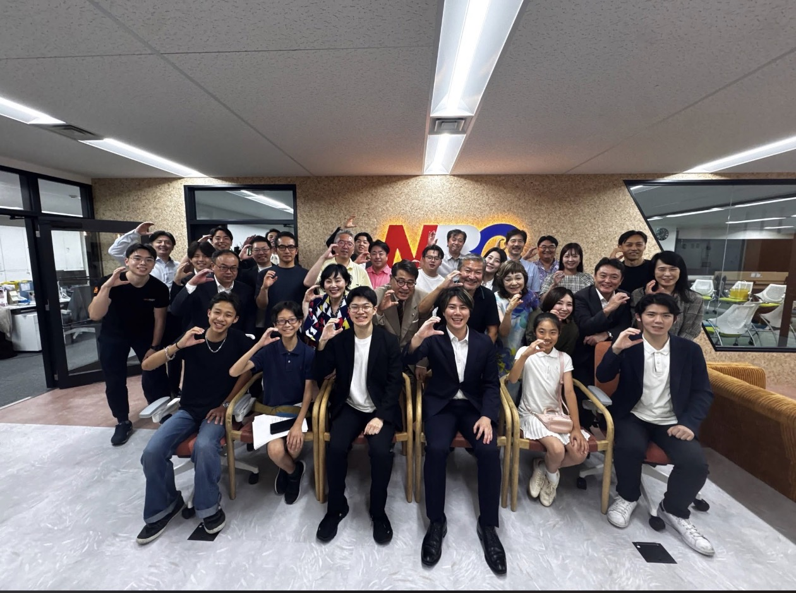

2026年7月16日、当社代表の佐藤徳之介が、一般社団法人東京ニュービジネス協議会（東京NBC）の起業塾に登壇しました。テーマは、「事業承継 × AI」。私たちがいま構想している『承継OS』について、開発を担うエンジニアの森とともにお話ししてきました。この記事は、その当日レポートです。
「儲かっているのに、継ぐ人がいない」
登壇は、ひとつの問いから始まりました。100年続いた町工場、家族三代の旅館、地元の胃袋を支えてきた食堂——黒字なのに、継ぐ人がいないというだけで畳まれていく会社が、いま日本にはたくさんあります。
国内企業の後継者不在率はおよそ半数。しかも廃業した会社の約半数は、直前期が黒字だったという調査もあります。赤字で力尽きたのではなく、儲かったまま、畳んでいる。私たちの試算では、それが毎年3万社規模にのぼります。技術が消え、雇用が消え、町の灯が消える。これは一社の話ではなく、国の基礎体力が削られていく話です。
承継OSとは——社長の判断を「残せる」ようにする
では、何が足りないのか。多くの中小企業では、いちばん大事な「経営判断」が、社長の頭の中にしか残っていません。だから社長が引けば、会社は回らなくなる。承継OSがやるのは、たった3つです。
ひとことで言えば、社長の頭の中を、会社の資産に変える。それが承継OSです。派手な魔法ではありません。AIの文字起こしや整理と、人の確認を掛け合わせた、人とAIの地道な分業。だからこそ、いまの技術で確実に作れます。
商品の主役は「自走率」
承継OSの主役になる数字が、自走率です。定型業務のうち、社長の判断なしで完了した割合を指します。社長への依存度が、初めて「数字」になる。
この数字は、いきなり「承継のため」に使うものではありません。まずは「社長がいなくても回る割合」を測る社内の経営改善の指標として使う。属人化が減り、社長の時間が空き、業務が回るようになる。その延長線上に、承継があります。
なぜ、いまなのか
承継OSは、5年前には作りたくても作れませんでした。理由は2つあります。
- 需要側：団塊世代の引退がいまピークを迎え、社長ひとりに頼る経営は限界に来ている。
- 供給側：生成AIの登場で、これまで記録のしようがなかった「社長の判断」を、初めて低コストで残せるようになった。
待ったなしの需要と、やっと生まれた技術。この2つが、いま出会いました。
いま、最初の仲間を探しています
承継OSは、これから一緒に育てていくプロダクトです。だから登壇では、完成した理想図を語るより、最初のパートナー企業と一緒に確かめたいことを正直にお話ししました。
- 整えていけば、本当に「安心して継げる会社」に近づけるのか
- 一社だけの職人芸で終わらせず、どんな会社にも効く「型」にできるのか
- どんな形なら、お互いに無理なく続けられる仕組みになるのか
会場では、料金の考え方や現場への入り方について、実践者ならではの視点をたくさんいただきました。その一つひとつが、次の設計図になります。「うちで最初に試してみたい」——そんな会社と、これから出会っていけたらうれしいです。
「継ぐ」を、若者の当たり前の選択肢に
そして承継OSは、若者の物語でもあります。就職か、起業か——道は2つだと思われがちですが、本当は3つ目がある。先人が育てた会社を受け継いで、自分の色で伸ばす「継ぐ」という道です。
顧客がいて、技術があって、歴史がある。そこに、若さとAIを掛け算する。NBCのような場から後継者候補を発掘し、育てていく。人（NBCと若者）と、道具（承継OS）。この両輪で、承継を回していきます。
「楽ではなく、楽しいを考える。」——面倒な作業をAIに任せて生まれた時間で、人は、継ぐという“楽しい”挑戦に向かえる。
登壇のご案内
- イベント
- 一般社団法人東京ニュービジネス協議会（東京NBC）起業塾
- 登壇日
- 2026年7月16日
- 登壇者
- 佐藤徳之介（株式会社AIdollargame 代表）／エンジニア・森
- テーマ
- 事業承継 × AI 『承継OS』の構想発表
「うちも、そろそろ考えないとな」と思ったら
まだ具体的でなくて大丈夫です。承継やAIの話は、まず雑談から。自社の仕事を一緒に棚卸しするだけでも、次の一手が見えてきます。気軽に声をかけてください。
無料相談を予約する →